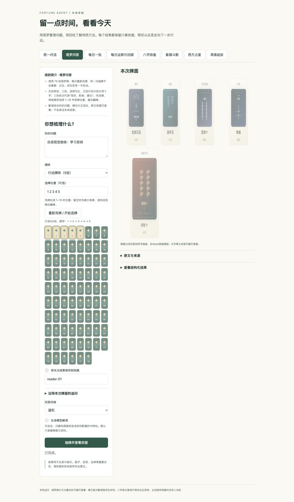
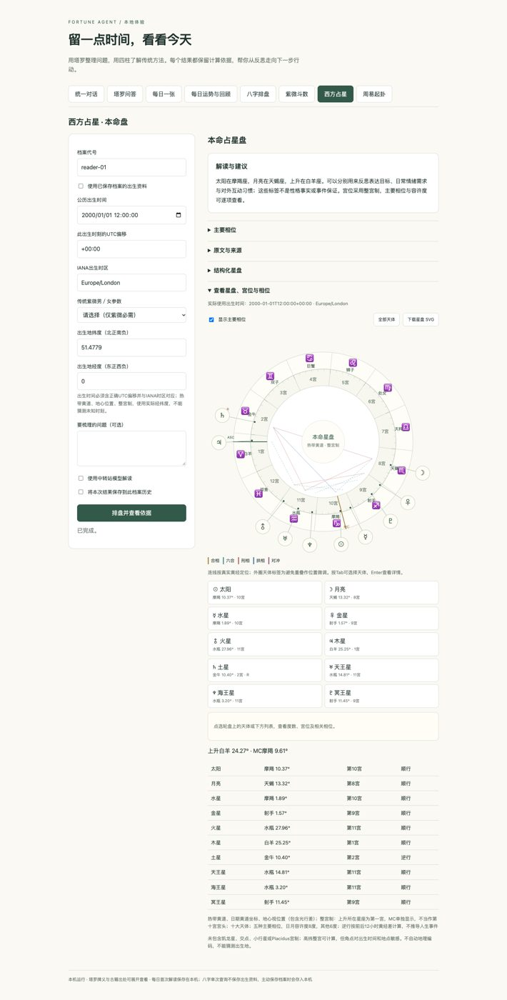
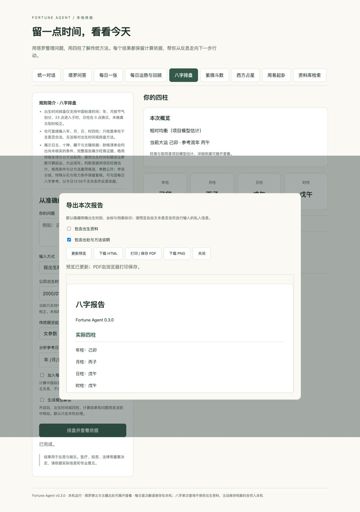

塔罗、八字、周易、紫微与占星的统一反思助手。模型选择与解释，程序计算与验证。
Agent实战项目 · 本地部署 · 2026-10-06
截图及演示均使用合成资料。传统概念不等于现实预测事实。
GitHub / paopao050624 / fortune-agent
缺出生时间、时区或经纬度，先补问；不假填午夜或按城市猜坐标。
保留实际牌面、命盘与卦象。追问、取消与重试复用已生成结果。
引用固定原文和来源，程序校验条目ID；未接入的书目明确提示。
档案先预览确认，进度可见，导出默认隐藏明确私人字段。
牌序、干支、天体位置与原文由程序提供。模型不能重写排盘或补出未提供资料。
后台任务保存阶段与实际结果，合作式取消阻止后续调用和采用迟到回答。
取消不保证服务商撤销已发送请求或退款；保存档案为单人本机记录。
78张原创符号牌图，服务端固定洗牌与正逆位；同一结果可继续追问。
同一入口也能选择八字、周易、紫微本命盘与占星；缺资料时补问。
插画为项目原创MIT资源，非Waite原版牌图。截图为合成案例。


27条固定电子修订摘录，按星曜、四化和宫位检索；原文由程序插入。
固定十大天体热带整宫制，黄经锚点不移动；标签防重叠，天体点选与SVG导出。
665条已接入来源，展示匹配原因与缺失典籍。
HTML、PNG、打印PDF，先预览再分享；默认隐藏明确出生时刻、坐标与档案标识。
Python＋Node、固定排盘版本、本机Docker Compose；CI验证请求防护和重启持久化。
模型自由文本可能含用户自行输入的隐私，导出前仍须检查；没有公网账户认证。

参数不稳定时暂停选定扶抑候选，而不是强行输出单一用神。
项目贡献：一个可运行、可观察、可复现检查的工具型Agent工程实现。
目前没有上述对照实验的因果结论，也没有现实预测有效性结论。完整演示脚本、评估与源码见同目录README与GitHub。